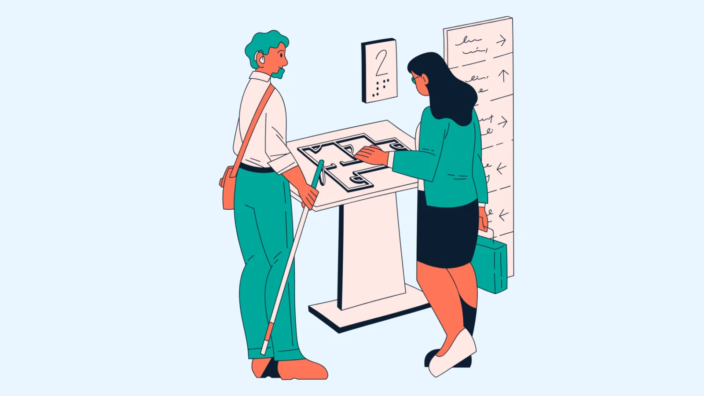
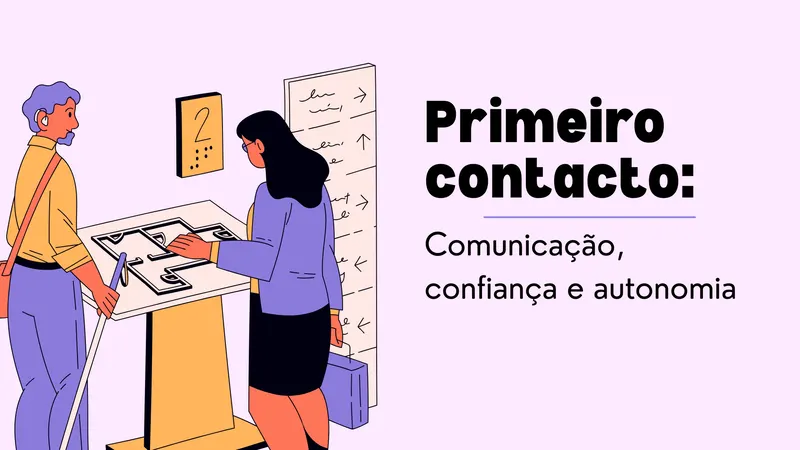
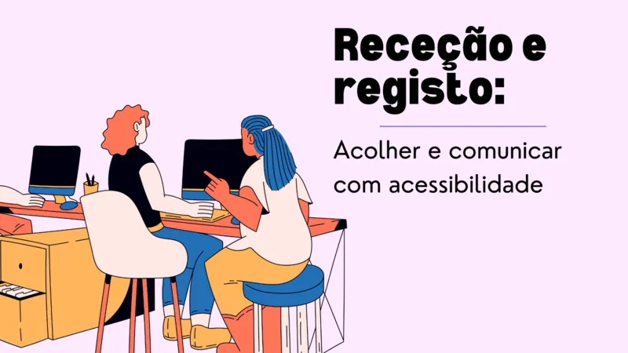
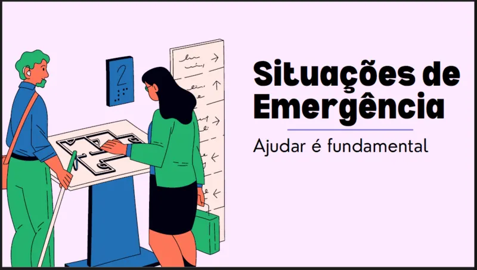

MOOC · Curso aberto online
Crises humanitárias: apoio a pessoas com deficiência visual
Um curso gratuito, em cinco lições curtas, para voluntários, técnicos de acolhimento, cuidadores e qualquer pessoa que queira saber como receber, orientar e apoiar uma pessoa cega num centro de acolhimento de emergência.

Porque criámos este curso
Em contextos de migração forçada e de crise humanitária, as pessoas cegas estão entre as mais expostas. Os processos de receção, registo e orientação foram pensados para quem vê: dependem de sinalética, formulários escritos e deslocação autónoma por espaços desconhecidos.
Quem presta assistência raramente tem formação para isso. Muitas vezes não sabe como abordar uma pessoa cega, como comunicar de forma acessível, como a guiar em segurança nem como registar as suas necessidades. Aqui sobrepõem-se duas vulnerabilidades, a deficiência visual e a condição de refugiado, e o apoio falha onde é mais necessário: nos primeiros contactos.
Porquê um MOOC?
- Escala e acesso: chega a muitos voluntários e cuidadores, onde quer que estejam, sem depender de formação presencial.
- Flexibilidade: cada pessoa aprende ao seu ritmo e pode voltar aos conteúdos sempre que precisar.
- Aprendizagem prática: explorar um centro de acolhimento em 3D permite treinar antes da situação real, sem consequências para ninguém.
Programa
As cinco lições
O curso acompanha a chegada de uma pessoa cega a um centro de acolhimento temporário. Cada lição trata uma etapa: do primeiro contacto à resposta a emergências. Recomendamos seguir a ordem, mas pode abrir qualquer lição.
-

Primeiro contacto
Comunicação, confiança e autonomia: as cinco regras para iniciar uma interação respeitadora.
Vídeo · Artigo · Visita 3D · Teste (3 perguntas)
-

Receção e registo
Acolher e comunicar com acessibilidade: contrato adaptado, formulário ditado e privacidade.
Vídeo · Artigo · Visita 3D · Teste (4 perguntas)
-
Orientação e acompanhamento
Guiar com apoio humano e orientação verbal num centro que a pessoa ainda não conhece.
Vídeo · Percurso 3D · Trabalho de casa (4 perguntas)
-
Acesso a apoios essenciais
Filas, senhas, alimentação, saúde e apoio social sem comprometer a autonomia da pessoa.
2 vídeos · Cenário 3D · Questionário (5 perguntas)
-

Segurança e emergências
Reconhecer riscos, dar alertas acessíveis e apoiar numa evacuação.
Vídeo · Artigo · Situações de decisão · Trabalho de casa (3 perguntas)
-
Como fizemos o curso
Planeamento, storyboards, escolha da plataforma e testes com utilizadores.
Como está organizada cada lição
Todas as lições seguem a mesma estrutura. Esta previsibilidade ajuda a orientação no curso e facilita a navegação com leitores de ecrã.
Vídeo
Uma situação encenada em duas versões, a incorreta e a correta, seguida das regras a aplicar. Com legendas e transcrição.
Artigo
Uma versão escrita dos conteúdos, para ler ao seu ritmo e com tecnologias de apoio.
Interação ativa
Uma visita 3D a um espaço do centro, com pontos de reflexão. Todos os pontos estão também descritos em texto.
Teste
Perguntas de cenário com explicação imediata de cada opção, certa ou errada.
Sobre as visitas 3D: os modelos Matterport são navegados com rato ou toque e não são acessíveis a leitores de ecrã. Por isso, cada visita tem uma alternativa em texto com os mesmos pontos e a mesma informação. O Matterport nunca é a única forma de aceder ao conteúdo.
Para quem é este curso
Voluntários e comunidade
Qualquer pessoa, sem conhecimentos prévios sobre deficiência visual: vizinhos, famílias de acolhimento, voluntários.
Cuidadores e técnicos
Quem acompanha regularmente pessoas cegas ou com baixa visão e trabalha em centros de acolhimento.
Futuros formadores
Quem quer replicar estas boas práticas nas suas equipas e organizações.
Referências que usámos
- Organização das Nações Unidas, Convenção sobre os Direitos das Pessoas com Deficiência, 2006 (artigos 3.º, 9.º, 11.º, 12.º e 19.º).
- Inter-Agency Standing Committee, Guidelines on Inclusion of Persons with Disabilities in Humanitarian Action, 2019.
- Sphere Association, The Sphere Handbook, 4.ª ed., 2018.
- ACNUR (UNHCR), Need to Know Guidance: Working with Persons with Disabilities in Forced Displacement, 2019.
- Regulamento Geral sobre a Proteção de Dados (UE) 2016/679, artigos 7.º e 9.º.
- W3C, Web Content Accessibility Guidelines (WCAG) 2.2, 2023.
- Guide Dogs UK, Sighted guide training.
- Humanity & Inclusion, Introduction to Disability-Inclusive Humanitarian Action, 2023.